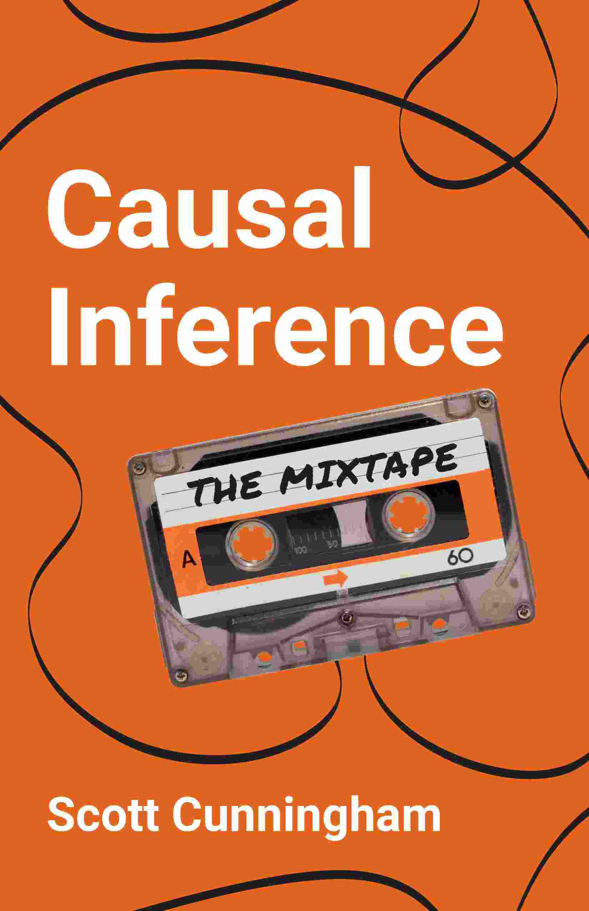
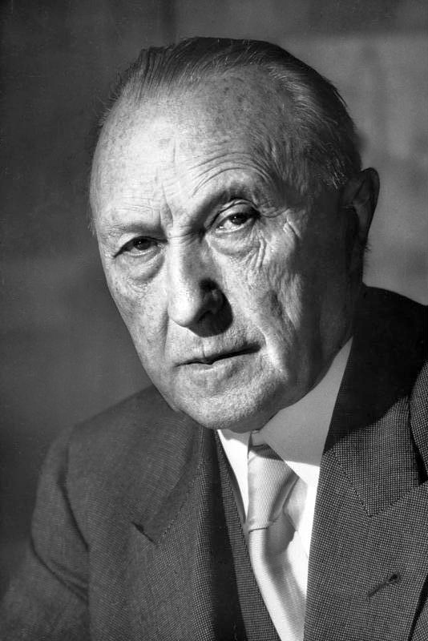
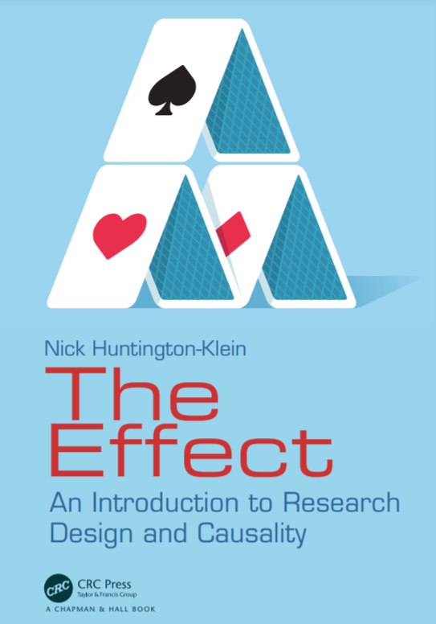

2 Doing research
2.1 What is research
Research often involves exploring unknown territory and seeking out new information through methods such as attending conferences, conducting interviews and experiments, and reading related research. This process can lead to the discovery of valuable techniques or insights that address important issues in society or science. Zora Neale Hurston (2010) (see Figure 2.1) paraphrased it beautifully:
“Research is formalized curiosity. It is poking and prying with a purpose.” (Hurston, 2010)
Effective research is based on the principles of honesty, transparency and much more. A pithy yet profound quote from Scott Cunningham’s book (see Figure 2.2) sums up this idea :
“True scientists do not collect evidence in order to prove what they want to be true or what others want to believe. That is a form of deception and manipulation called propaganda, and propaganda is not science. Rather, scientific methodologies are devices for forming a particular kind of belief. Scientific methodologies allow us to accept unexpected, and sometimes undesirable, answers.” (Cunningham, 2021, p. 10)

2.2 Everybody can do research

Before I go into how empirical research can and should be conducted, I would like to assert that each of us is a researcher in some sense and that you don’t need a degree or a higher education to be a (good) researcher. Each of my four children (ages 2, 5, 6, and 8 (at the time of writing this)), for example, explores the world and learns something new every day. Even though none of my children is yet able to verify the novelty of their acquired knowledge and write it down in scientific form, I will claim that mine, like practically all children, are already little scientists. Why? Well, they explore unknown territory and search for information to discover new techniques that will make their lives pleasant, see Figure 2.3. Of course, they don’t attend conferences or read journals to do this. They have never heard terms such as ontology, epistemology, axiology, or quantitative and qualitative methods. They are using methods that they have mastered for their age. They interview me, my wife and all other people around and they conduct experiments. For example, all my children liked to throw plates, cutlery, cups and alike from the table when they were about one year old. At first the throwing was just an accident, but they quickly found out that each throw was followed by a sound when the object touched the stone floor. My first son, in particular, took great delight in making these sounds. He threw everything within reach to the ground and giggled with joy at the clink he made when the object hit the ground. Perhaps he was also enjoying the attention he was getting from us parents through these actions. In any case, the behavior annoyed us. Wiping food scraps off the floor is not a nice thing to do. Unfortunately, at that time my son did not accept any argument to refrain from throwing. Neither a stern look nor a definite “no” helped to stop this behavior. Too great was the joy at the relationship he had figured out, which was, “I throw something off the table and it always clangs beautifully loud.” So I started to do some research to figure out what I could do to stop him. The short answer I found can be summed up pretty well as “nothing”. There is practically no good method to change the behavior without possibly negatively influencing his early childhood development. The reason is he did some research and we should not suppress that. Besides nature and material research he did social research: He found out that things fall to the ground (gravity), that things break and make different sounds (material research), and that other people notice him when he throws things (social research).
Once, when we were eating at a friend’s house, my son (once again) threw everything off the table one after the other in unobserved moments. This time, however, it made no noise. The carpet under the table muffled everything. My son was irritated and at some point became really angry. Why? Well, his surely believed reality and his law “I throw something from the table and then it always clangs beautifully loud.” was falsified. Soon he understood that his law only had to be adapted a little. It was then: “I throw something from the table and it clangs then beautifully loudly if a stone floor is under me.” He repeated his experiments for a few more weeks, to check its validity. In the meantime he does other experiments trying to contribute to his own knowledge.
In general, the purpose of research is to find new knowledge or discover new ways to use existing knowledge in a creative way so as to generate new concepts, methodologies, inventions and understandings that -now or later- may be of some value for the human mankind. In simple terms, we aim to find something out. We aim to find a new law, a new relationship, a new insight. Or, we aim to challenge and revise existing insights on how the world works. You don’t need a degree to do that. All you need is interest, open-mindedness, and a willingness to revise your ideas about how the world works. The latter is perhaps the most important skill you need to be a good researcher. Otherwise, one is a narrow-minded, and bigoted person who is too proud to follow up an insight with a change of mind.
I myself have a quick and happy tendency to change my views because it is a statement of a fresh understanding. Here are two more quotes from Mr. Keynes (see Figure 2.4) and Mr. Adenauer (see Figure 2.5), two historically slightly more significant people than me that are along the same lines and should convince you that changing your mind is not a sign of weakness, but of strength. Especially in science, the willingness to change one’s mind is essential.

“When the facts change, I change my mind. What do you do, sir?”5

“What do I care about the rubbish I said yesterday? No one can stop me from getting smarter every day.” (“Was interessiert mich mein Geschwätz von gestern? … es kann mich doch niemand daran hindern, jeden Tag klüger zu werden.”)7
2.3 It’s difficult to do good research
Simply trying something and seeing what happens, like my children do, is a research method that relies on luck and chance. Before I go into more grown-up ways of doing research, I want to emphasize that the role of chance and serendipity in research is often downplayed and not acknowledged. The most well-known example of such research is the discovery of penicillin by Alexander Fleming (see Figure 2.6). In 1928, Fleming was studying the properties of staphylococcus bacteria when he noticed that a mold called Penicillium notatum had contaminated one of his bacterial cultures. He noticed that the mold seemed to be inhibiting the growth of the bacteria, and he began to investigate this further. Eventually, he was able to isolate and purify the active ingredient in the mold, which he named penicillin, and he discovered that it had powerful antibiotic properties. This discovery revolutionized the field of medicine and has saved countless lives.

Doing something on purpose and observing how things respond to the action can be considered a research strategy. Acting like a child or just waiting for something to happen by chance can also be considered a research strategy, and of course this can contribute greatly to knowledge. However, it are a naïve and poorly targeted strategies to conduct research. There are more grown-up research methods that are targeting more precisely the gaps in our knowledge and speed up innovation in the field where progress is desperately needed.
The processes of research and observation of phenomena should aim to maximize the probability of discovering new and intriguing findings. They should also ensure a high degree of confidence in the validity of our findings and reduce the likelihood that they will be disproved shortly afterwards. Transparency, scientific collaboration and open competition are crucial for efficient progress in science.
Take, for example, the scenario of a fatal disease. A naïve approach to finding a cure might be to try different things and observe who falls ill and who dies or is cured, hoping to stumble upon a cure through serendipitous observation. However, this method is unlikely to be effective or practical. A more promising strategy would be to systematically study the disease and openly communicate research plans before they are implemented. This avoids unnecessary efforts and costs and accelerates the achievement of results.
For example, a laboratory should first seek to isolate the causative virus or bacterium in order to be able to grow and study it outside the danger to humans. Once this is done, we need a precise plan on how we can use all the available knowledge to cure the disease, protect people from infection, or help them survive the disease. In short, we need a strategic way to conduct research, i.e., a research strategy or design.
A research strategy is a general plan for conducting a study and a research design is a detailed plan for conducting the study. These words are frequently used interchangeably. A research strategy depends on many things including the question, the resources available, the current state of knowledge, the ambitions, whether quantitative or quantitative data are used, and what is considered to be the criteria of good research.
Before discussing some research strategies that can provide reasonable answers to certain types of questions, we should clarify how to ask a research question and what qualifies a research question.
2.4 Asking questions lika a good researcher
Unfortunately, there is no one research strategy that is appropriate for all questions and, what is worse, there is still controversy about what constitutes good research and how to properly ask a research question. In particular, this controversy takes place between researchers who use quantitative data and statistical methods and researchers who use qualitative data and methods.
Quantitative researchers are interested in both the causes of effects and the effects of causes. Experimental setups can allow to validate causes of effects and to measure the effects of causes. With observational data, however, it is often difficult to investigate the causes of effects. Thus, often quantitative research is more interested to quantify the effects of causes. Qualitative researchers also try to determine the causes of effects . However, their data analysis does rely less on statistical inference. A qualitative data set not necessarily requires (large) random samples or structured data (all the data that you can structure in a spreadsheet) in general, but allows to analyze selective and unstructured data (that is data in form of audio, video, text, images and alike). Qualitative research methods allow to classify these data into patterns or to interpret them in a meaningful way in order to arrive at results. Qualitative researchers are more concerned with the why and how of decision making and examine people’s behavior, beliefs, perceptions of events, experiences, attitudes, interactions, and more in great depth.
In empirical research, inductive and deductive are two different approaches to reasoning. Inductive reasoning is a process of collecting data from various sources, such as interviews, surveys or observations, and then use this data to identify patterns, themes, or relationships that can form the basis of a new hypothesis or theory. The goal of these exploratory studies, is to generate new ideas or insights about a topic, rather than testing a specific hypothesis. Deductive reasoning is a process in which the researcher starts with a general theory or hypothesis with the goal to test a specific hypothesis or theory. In most cases, a combination of both inductive and deductive reasoning may be used to formulate the research question and to design the empirical identification strategy.
In what follows, however, we focus on the criteria for good research that are more commonly used in evaluating the quality of quantitative research.
Exercise 2.1 The Effect ch.1+2
Read chapter 1 and 2 of Huntington-Klein (2022) and answer the questions below. The book (see Figure 2.7) is freely available at https://theeffectbook.net and here is the link to chapter 1: https://theeffectbook.net/ch-TheDesignofResearch.html

- What is the main focus of the book the author is writing about?
- Philosophy of science
- Qualitative research methods
- Empirical research and quantitative methods to identify and measure causal effects
- Statistics
- What is the main challenge faced by quantitative empirical research, according to the author?
- Difficulty in obtaining accurate measurements
- Difficulty in interpreting measurements
- Difficulty in obtaining data that allows to answers the research question
- Difficulty in designing a research that gets a lot of attention
- What is the author`s main point about research questions?
- They should be well-defined, answerable, and understandable
- They should be simple and easy to answer
- They should be related to the world of traffic
- They should be related to the field of quantum mechanics
Please find solution here: Solution 2.1.
2.5 Features of good research
In order to make you a competent researcher who does not have to wait for a lucky chance but has a clear strategy, let’s discuss the criteria of a good research. Before I do that, however, I must make a disclaimer: there is a lack of consensus on what constitutes high-quality research in social sciences. In my experience, the practical benefits of such a tedious discussion are quite small. All I like to put forward is that I believe that all social science disciplines such as sociology, anthropology, psychology, economics, business administration, and education using quantitative methods agree that good research should be replicable, reproducible, transparent, reliable, and valid.
2.5.1 Reliability and validity
A research design is a plan to examine information in a systematic and controlled way so that the results of the research are valid and reliable.
Validity refers to the accuracy and truthfulness of research findings. In other words, if a study is valid, it should measure what it is intended to measure and produce results that are representative of the population being studied. Validity is important because it helps to ensure that the conclusions drawn from a study are supported by the data and are not based on flawed or biased methods.
Reliability refers to the consistency and stability of research findings. In other words, if a study is reliable, it should produce similar results if it is repeated using the same methods and conditions. Reliability is important because it helps to ensure that the results of a study are not simply due to chance or random error.
Both reliability and validity are important considerations in research, and researchers strive to maximize both in their studies. However, it is important to note that it is often difficult to achieve both at the same time, and trade-offs may need to be made between the two.
Note 2.1
A good research design should aim to minimize bias and maximize the reliability and validity of the research. It should also be appropriate for the research question being asked and the resources available to the researcher.
High reliability and low validity
An example of a study that has high reliability but low validity is a study that measures the weight of a group of people using a digital scale. If the scale is consistently accurate and produces the same weight measurements each time it is used, then the study has high reliability. However, if the scale is not calibrated correctly and produces inaccurate weight measurements, then the study has low validity.
Another example of a research design that has high reliability but low validity is a study that uses a highly reliable measurement tool, such as a standardized test, to measure a concept that is not directly related to the research question being asked. For example, a study that uses a standardized math test to measure students’ critical thinking skills may have high reliability because the test is consistently accurate and produces similar scores each time it is administered. However, the study may have low validity because the math test is not an appropriate tool for measuring critical thinking skills. As a result, the results of the study may not be representative of the students’ true critical thinking abilities.
High validity and low reliability
An example of a study that has high validity but low reliability is a study that asks people to self-report their eating habits. While the study may produce accurate and representative results about people’s eating habits, the self-reported data may vary from person to person and may not be consistent over time. As a result, the study has high validity but low reliability.
Another example of a study that has high validity but low reliability is a study that uses a highly valid measurement tool, such as a survey, to measure a concept that is directly related to the research question being asked. However, the study may have low reliability because the survey is not administered consistently or the responses are not accurately recorded. For example, a study that uses a survey to measure students’ attitudes towards school may have high validity because the survey is relevant to the research question and accurately measures the students’ attitudes. However, if the survey is not administered consistently or the responses are not accurately recorded, the study may have low reliability. As a result, the results of the study may not be representative of the students’ true attitudes towards school.
Trade-offs between reliability and validity
In research design, trade-offs may need to be made between reliability and validity. For example, a study that uses a highly reliable measurement tool may not be valid if the tool is not appropriate for the research question being asked. Similarly, a study that uses a highly valid measurement tool may not be reliable if the tool is prone to producing inconsistent results. As a result, researchers must carefully consider both reliability and validity when designing a study and make trade-offs as necessary to maximize the overall quality of the research.
2.5.2 Generalizability
Coming back to my little son who threw everything within reach to the ground and giggled with joy at the clink he made when the object hit the ground. He identified a cause-and-effect relationship through an experiment in an controlled environment. His law “I throw something off the table and it always clangs” worked in our home. To our regret, it was replicateable and he really tried hard to falsify it. Moreover, his study was reasonable valid as his study design, conduct, and analysis could answer his research questions without bias (at least ignoring the other noises that his sibling and parents make coincidentally during his experiment). Scientist call this internal validity. However, he also found out that when he leaves our home, things are sometimes a bit different, for example, if there is a carpet under the table. Thus, his insights from our home findings can’t be generalized to other contexts, at least not without further specifications. Scientist call this external validity.
Note 2.2
Internal validity examines whether the study design, conduct, and analysis answer the research questions without bias. External validity examines whether the study findings can be generalized to other contexts.
2.5.3 Replicability, reproducibility, transparency, and other criteria
It must be possible to repeat the research conducted for several reasons. For example, if you can repeat a study with slightly changed parameters, you are able to improve its external validity and show that the conclusions drawn are reliable. To be able to repeat a study, everything that is important for drawing a conclusion from the research has to be mentioned. This is what we call transparency. Moreover, everything in the study must have been done in such a way that we can check the results for truth. In the best case, it is possible to reproduce the results in the same way they were obtained in the study. Sometimes this is not possible because, for example, we can never really ask the same people again in a survey, and even if we found the same people, they would have gotten older and not be the same people as before. In such a case, it should at least be possible to replicate the research. This means that we can basically do the same thing in a setting that differs only in those things that we cannot avoid to be different. For example, by interviewing a group of people who match the people in the study to replicate them on all the important characteristics like age.
In an empirical quantitative research study, for example, the data and the code written to process the data and analyze it should be accessible to everyone.
In a qualitative study, all sources of information should be stated, and the circumstances leading to a conclusion should be fully explained. For example, all transcripts of interviews conducted should be made available. The researcher should provide rich and detailed descriptions of the data and the context in which it was collected. Research should be provided with rich, nuanced, and multi-layered accounts of social phenomena by describing and interpreting the meanings, beliefs, and practices of the people being studied. That is known as thick description. Researchers typically employ a variety of methods such as participant observation, in-depth interviews, and document analysis, and they often use multiple sources of data to triangulate their findings. The goal is to provide a holistic and broad understanding of the phenomenon being studied, rather than a narrow view from the researcher’s perspective.
There are some other criteria of good research that are worth mentioning:
Credibility
The research should be trustworthy and believable, and the researcher should provide detailed descriptions of the methods used to ensure transparency.
Reflective Practice
The researcher should engage in reflexive practice throughout the research process, which means to be critically aware of oneself, one’s own assumptions, and one’s own role in the research process.
Triangulation
The researcher should use multiple methods, sources, and perspectives to increase the credibility of the findings (also see thick description above).
Transferability
The conclusions drawn from looking at mostly unstructured data in qualitative research can hardly be generalized in a strict sense, as they depend crucially on the context of the object of study. For example, generalizability is essentially impossible in a qualitative case study, since everything depends on the specific situation of an individual, a company, or a group of people considered in the specific setting. This means that in a case study or interview, we may be looking at only a few or even a single observation that cannot be considered representative of the larger population, as generalizability does. Transferability, on the other hand, gives the reader the ability to transfer the findings into other contexts. The ability to transfer contextual findings to other cases is a goal of qualitative research, and the author of a study should attempt to offer the information in a way that allows the reader to transfer the findings to the setting or situation with which he or she is familiar.
2.6 The role of resources, data and ethics
There are several types of research designs, including experimental designs, quasi-experimental designs, and observational designs. Each of these designs took advantage of various empirical methods and statistical procedures. We will discuss some of them later on. The choice of research design, of course, should depend on the research question being asked, the resources available, and the type of data that is being collected. The research design should also take into account any ethical considerations that may be relevant to the research. The research design should be chosen so that it is well suited to answer the research question. For example, if one is interested in the question “Why do some people get sick with a certain disease and others do not?” then an observational study design to determine possible causes of effect may be appropriate. These identified potential causes should then be verified followed by an experimental study. Relatively, a statistical analysis should be used which would allow the effects of causes to be evaluated. The aim should be to identify necessary and sufficient circumstances to develop a disease. Also circumstances should be described that favor a disease.
If the question is a “how” question, for example, “How do parents feel when their child throws everything off the table?” then interviews might be an appropriate study design. If available resources such as time, funding, and staff are limited, you might also consider conducting an (online) survey in which parents are asked standardized questions about their feelings. In any way, the chosen research design must be feasible given the resources available.
In answering a question, a researcher should know, state, and discuss all the assumptions and unexamined beliefs that led him to his conclusion. However, since resources for conducting and explaining research are limited, special attention should be paid to what are called critical assumptions. These are assumptions that must be true in reality, otherwise the research is meaningless. Therefore, researchers should make great efforts to identify and validate these assumptions.
The type of data that is being collected is another important factor to consider when choosing a research design. Different types of data, such as quantitative data, qualitative data, or a combination of both, may require different methods of collection and analysis. For example, quantitative data, such as numerical data, can be collected through methods such as surveys and analyzed using statistical techniques, whereas qualitative data, such as interview transcripts, may require more interpretive methods of analysis.
Finally, the researcher should also take into account any ethical considerations that may be relevant to the research. For example, if the study involves human subjects, the researcher must ensure that the study is conducted in accordance with ethical principles such as informed consent and confidentiality. Additionally, the researcher should ensure that the potential benefits of the study outweigh any potential risks to the subjects.
Exercise 2.2 Features of research
- Which of the following best defines reliability in research?
- The extent to which a measurement tool produces consistent results
- The extent to which a study’s results accurately reflect the concept being measured
- The extent to which a study’s results can be generalized to other populations
- The extent to which a study’s results are statistically significant
- Which of the following best defines validity in research?
- The extent to which a measurement tool produces consistent results
- The extent to which a study’s results accurately reflect the concept being measured
- The extent to which a study’s results can be generalized to other populations
- The extent to which a study’s results are statistically significant
- Which of the following is an example of a study with high reliability but low validity?
- A study that uses a highly reliable measurement tool to measure a concept that is directly related to the research question being asked
- A study that uses a highly valid measurement tool to measure a concept that is not directly related to the research question being asked
- A study that uses a highly reliable measurement tool to measure a concept that is not directly related to the research question being asked
- A study that uses a highly valid measurement tool to measure a concept that is directly related to the research question being asked
- Which of the following is an example of a study with high validity but low reliability?
- A study that uses a highly reliable measurement tool to measure a concept that is directly related to the research question being asked
- A study that uses a highly valid measurement tool to measure a concept that is not directly related to the research question being asked
- A study that uses a highly reliable measurement tool to measure a concept that is not directly related to the research question being asked
- A study that uses a highly valid measurement tool to measure a concept that is directly related to the research question being asked
- What does internal validity examine in a study?
- The ability to replicate the study
- The generalizability of the study’s findings
- Whether the study design, conduct, and analysis answer the research questions without bias
- All of the above
- What does external validity examine in a study?
- The ability to replicate the study
- The generalizability of the study’s findings
- Whether the study design, conduct, and analysis answer the research questions without bias
- None of the above
- What is transparency in research?
- The ability to replicate a study
- The generalizability of the study’s findings
- The availability and accessibility of the data and materials used in a study for others to review
- The ethical considerations of the research
- What are the different types of research design discussed in the text?
- Experimental designs, quasi-experimental designs, and observational designs
- Experimental designs and descriptive designs
- Quasi-experimental designs and observational designs
- None of the above
- Why is replicability important in a study?
- To be able to repeat a study with slightly changed parameters and thus improve the external validity
- To be able to check the results of the study for truth.
- To be able to reproduce the results in the same way they were obtained in the study
- All of the above
Please find solution here: Solution 2.2.
Glossary
- Generalizability: The extent to which the results of a study can be applied to other populations or contexts.
- Internal validity: The degree to which a study’s results can be attributed to the specific variables or factors being studied, and not to other extraneous factors.
- External validity: The degree to which a study’s results can be generalized to other populations or contexts outside of the specific sample or setting of the study.
- Quantitative data: Data that can be measured and quantified.
- Qualitative data: Data that cannot be easily measured or quantified.
- Quantitative research: A research approach that uses statistical methods and experiments to determine the causes of effects, to quantify the effects of causes, or to describe data.
- Qualitative research: A research approach that uses unstructured data and methods to examine, for example, people’s behavior, beliefs, and experiences in depth, rather than quantifying results.
- Reflective Practice: A form of self-evaluation used to analyze one’s own thoughts and actions.
- Reliability: The consistency of a study’s results to produce similar results when repeated.
- Research design: A detailed plan for conducting a study, frequently used interchangeably with research strategy.
- Research method: A procedure used to conduct a study or investigation to gain knowledge or understanding about a particular topic.
- Research question: A question or problem that a study aims to answer or solve.
- Research strategy: A general plan for conducting a study, frequently used interchangeably with research design.
- Replicability: The ability of a study to be repeated with new data.
- Reproducibility: The ability of a study to be repeated and produce the same results, often used interchangeably with replicability.
- Serendipity: The role of luck and unexpected events in research.
- Thick Description: A detailed narrative used to explain a situation and its context.
- Credibility: A quality criterion in qualitative research, which refers to confidence in the truth value of the data and interpretations of them.
- Transparency: The degree to which a study’s methods and data are easily accessible and understandable to others, allowing for the study to be independently evaluated and replicated.
- Triangulation: A method used in qualitative research to verify the accuracy of data by combining multiple sources of information.
- Validity: The degree to which a study measures what it is intended to measure, and the extent to which the results of the study can be considered accurate and meaningful.
- Structured data: Data that can be easily organized and analyzed in a structured format, such as a spreadsheet.
- Unstructured data: Data that cannot be easily organized and analyzed in a structured format, such as text, images, and audio.
2.7 Solutions to excercises
Solution 2.1. Solution to exercise Exercise 2.1.
- c), 2. c), 3. a)
Solution 2.2. Solution to exercise Exercise 2.2
- a), 2. b), 3. c), 4. d), 5. c), 6. b), 7. c), 8. a), 9. d)
Source: Photography is taken from Library of Congress: Prints & Photographs Division, Carl van Vechten Collection, Reproduction Number LC-USZ62-54231, see: https://www.loc.gov/pictures/item/2004663047/↩︎
Source: Image by macrovector on Freepik, see: https://www.freepik.com/free-vector/kindergarten-set-isolated-icons-with-toys-characters-kids-practicing-with-teacher-playing-games-vector-illustration_26760074.htm↩︎
Source: Photography is public domain and stems from https://de.wikipedia.org/wiki/John_Maynard_Keynes#/media/Datei:Keynes_1933.jpg↩︎
This quote is often attributed to Keynes, but there is no clear evidence for it, see: https://quoteinvestigator.com/2011/07/22/keynes-change-mind/↩︎
Source: This photography from 1952 is public domain and stems from the Bundesarchiv, B 145 Bild-F078072-0004, Katherine Young, CC BY-SA 3.0 DE.↩︎
Freely quoted (and translated) from Weymar (1955, p. 521)↩︎
Source: Photography is public domain and stems from https://en.wikipedia.org/wiki/File:Synthetic_Production_of_Penicillin_TR1468.jpg↩︎